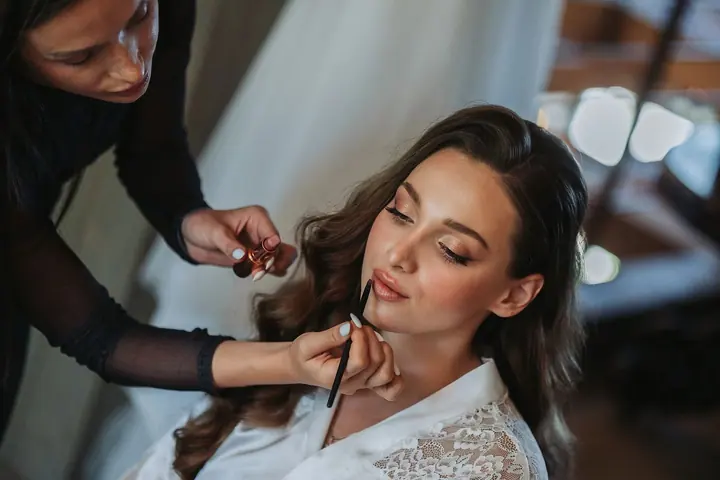
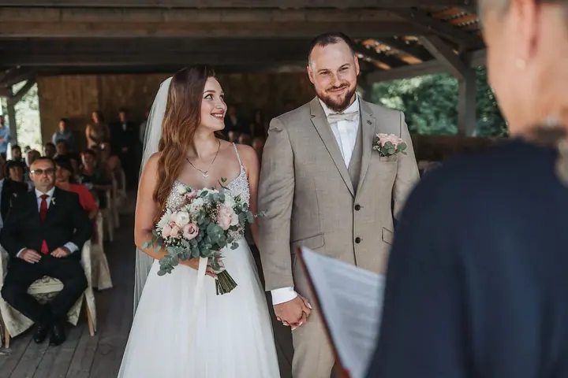
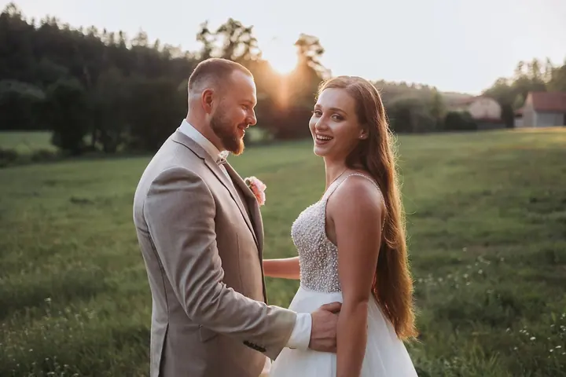

jedna
Svatební den KOMPLET
Fotím celý den od ranních příprav až po večerní party, dokumentárně a přirozeně. Dostanete minimálně 400 upravených fotografií na USB v dřevěné krabičce s gravírováním a k tomu online galerii.

Svatební fotograf · Praha, celá Česká republika

Jmenuji se Petr Janovský a jsem svatební fotograf z Prahy. Fotím celý svatební den od ranních příprav až po večerní oslavu, přirozeně a bez zbytečného aranžování. Za svatebními páry jezdím po celé České republice.
Více o mně
Co fotím
jedna
Fotím celý den od ranních příprav až po večerní party, dokumentárně a přirozeně. Dostanete minimálně 400 upravených fotografií na USB v dřevěné krabičce s gravírováním a k tomu online galerii.
Skutečné emoce, bez zbytečného zasahování.


Za objektivem
Dlouhá léta jsem trávil v kanceláři jako zaměstnanec. Přinášelo mi to určitou stabilitu, ale postupem času jsem cítil, že mi něco chybí. Potřeboval jsem dát prostor kreativitě a věcem, které mě opravdu naplňují.
Fotografování bylo vždycky mým koníčkem. Fascinovalo mě, že fotka umí vyprávět příběh beze slov. Nakonec jsem se rozhodl dát fotografii víc své energie a začal se jí věnovat profesionálně. Dnes se specializuji na celodenní svatby.
Můj styl je kombinací dokumentárního a přirozeného focení. Dávám přednost skutečným emocím a spontánním momentům, a tak se během dne snažím být co nejméně nápadný. Chci, abyste na fotkách po letech poznali, jaký váš den doopravdy byl.
Petr
Před svatbou se potkáme osobně nebo na videohovoru a probereme vaše představy, přání i průběh dne.
Jsem s vámi od ranních příprav až po večerní party. Držím se v pozadí, abych mohl fotit to, co se opravdu děje.
Z celého dne pečlivě vyberu a upravím minimálně 400 fotografií v plné digitální kvalitě.
Fotky dostanete na USB flash disku v dřevěné krabičce s gravírováním a zároveň v online galerii, odkud si je pohodlně stáhnete.
Portfolio
Fotografie jsou ilustrační
Otázky
Balíček Svatební den KOMPLET stojí 20 000 Kč. Zahrnuje celodenní focení, minimálně 400 upravených fotografií, USB v dřevěné krabičce a online galerii.
Ano, fotím svatby po celé České republice a doprava je v ceně zdarma.
Spíš ne. Fotím dokumentárně a přirozeně, snažím se být co nejméně nápadný a do dění zbytečně nezasahovat. Na společných fotkách vám samozřejmě rád poradím.
Na USB flash disku uloženém v elegantní dřevěné krabičce s gravírováním. K tomu dostanete přístup do online klientské galerie.
Určitě. Před focením nabízím osobní schůzku nebo videohovor, abychom si všechno v klidu probrali.